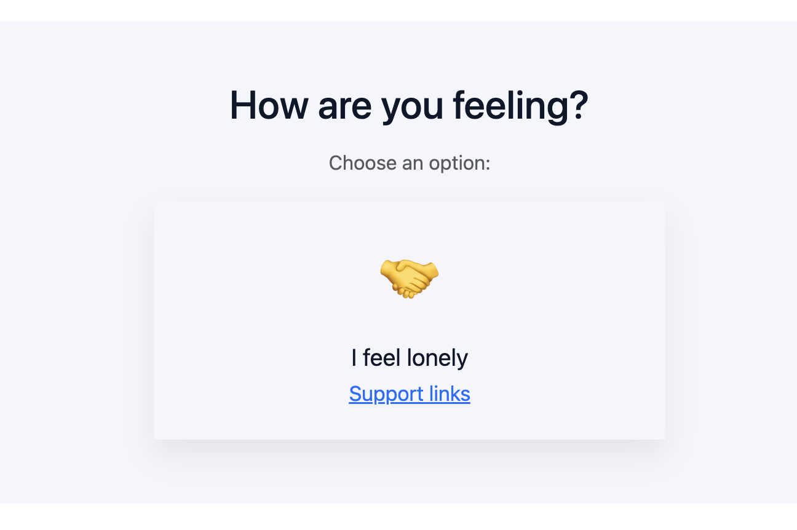

class: center, middle, title # Safe Mind ### Calm and support abroad <span style="font-size:0.8em; color:#64748b;">Student of Web Communication project</span> **Author:** Vladyslava Havrylenko --- # Project idea Many people from Ukraine were forced to leave their homes because of the Russian–Ukrainian war. Living abroad in these conditions often increases stress: * new environment * new rules * language barriers **Safe Mind** is a small web app for Ukrainian people that helps users: * calm down quickly * reconnect with their body * find helpful mental health resources --- # Target audience Ukrainians living abroad who: * feel anxious or overwhelmed * need quick emotional support * do not know where to look for help <span style="color:#2563eb; font-weight:600;">Focus:</span> simple and fast actions. --- # Main features 1. **Help section** – choose how you feel 2. **Grounding exercise** – random short task 3. **4–4 breathing** – visual breathing guide 4. **Resources** – help links by country and online 5. **Cookie banner** – basic consent --- # User flow 1. User opens the website 2. Reads what the project is about 3. Chooses an exercise or breathing 4. Uses resources if needed --- # Technologies #### HTML – page structure It used to create the structure of the website, defines sections, headings, buttons and text blocks. #### CSS and Bootstrap – layout and design CSS is responsible for colors, spacing, and visual style. Bootstrap helps build a responsive layout and ready-made components. #### JavaScript – interactivity and logic Button clicks, random exercises, breathing timer and cookie banner behavior. --- class: center, middle # Example 1 ## Random grounding exercise --- ```js const exercises = [ 'Name 5 things you can see.', 'Feel your feet on the ground.', 'Listen to 3 sounds around you.' ]; button.addEventListener('click', () => { const i = Math.floor(Math.random() * exercises.length); box.textContent = exercises[i]; }); ``` **What this code does:** * stores short exercises in an array * picks one randomly * shows it when the button is clicked --- class: center, middle # Example 2 ## 4–4 breathing --- ```js setInterval(() => { if (phase === 'inhale') { circle.textContent = 'Inhale'; phase = 'exhale'; size = 140; } else { circle.textContent = 'Exhale'; phase = 'inhale'; size = 170; } }, 4000); ``` **What this code does:** * switches between inhale and exhale * every 4 seconds * helps control breathing visually --- # Example 3 ## Cookie consent ```js function acceptCookies() { document.cookie = 'safeMindConsent=1; max-age=31536000; path=/'; cookieBanner.style.display = 'none'; } ``` **What this code does:** * saves user consent in cookies for one year * hides the cookie banner after acceptance * provides basic privacy compliance --- # Emergency phone numbers The website shows important phone numbers so users can get help fast. **Examples:** * 🇮🇹 Italy – emergency mental health services * 🇩🇪 Germany – crisis hotlines * 🇵🇱 Poland – psychological support lines * 🌍 Online – mental health support platforms These numbers are placed in the **Resources** section and are easy to find. --- # Design * soft colors for a calm feeling * cards with hover effects * breathing circle as a visual focus <p></p> --- class: center, middle # Thank you! <span style="color:#2563eb; font-size:1.1em;">Do you have any questions?</span>